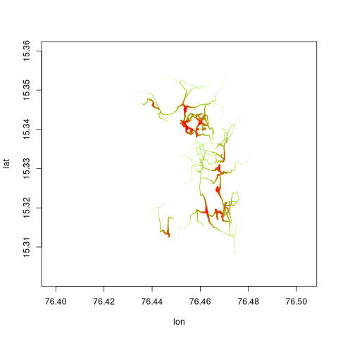
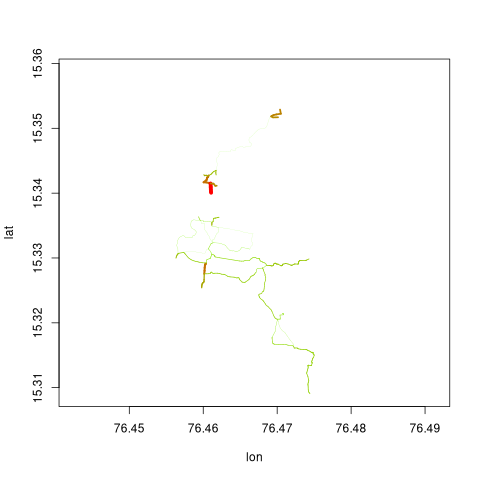
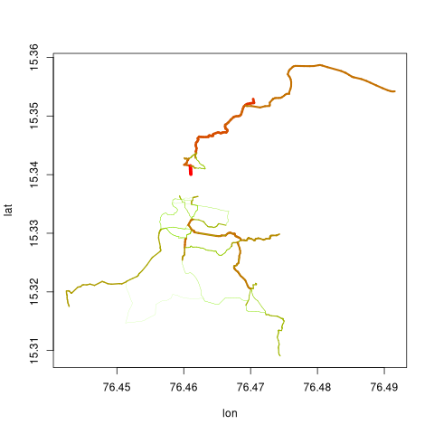

The dodgrpackage includes three functions for allocating
and aggregating flows throughout network, based on defined properties of
a set of origin and destination points. The three primary functions for
flows are dodgr_flows_aggregate(),
dodgr_flows_disperse(),
and dodgr_flows_si(),
each of which is now described in detail.
1 Flow Aggregation
The first of the above functions aggregates ‘’flows’’ throughout a
network from a set of origin (from) and destination
(to) points. Flows commonly arise in origin-destination
matrices used in transport studies, but may be any kind of generic flows
on graphs. A flow matrix specifies the flow between each pair of origin
and destination points, and the dodgr_flows_aggregate()
function aggregates all of these flows throughout a network and assigns
a resultant aggregate flow to each edge.
For a set of nf points of origin and nt
points of destination, flows are defined by a simple
nf-by-nt matrix of values, as in the following
code:
graph <- weight_streetnet (hampi, wt_profile = "foot")
set.seed (1)
from <- sample (graph$from_id, size = 10)
to <- sample (graph$to_id, size = 10)
flows <- matrix (10 * runif (length (from) * length (to)),
nrow = length (from)
)This flows matrix is then submitted to dodgr_flows_aggregate(),
which simply appends an additional column of flows to the
submitted graph:
graph_f <- dodgr_flows_aggregate (graph, from = from, to = to, flows = flows)
head (graph_f)## geom_num edge_id from_id from_lon from_lat to_id to_lon to_lat
## 1 1 1 339318500 76.47491 15.34167 339318502 76.47612 15.34173
## 2 1 2 339318502 76.47612 15.34173 339318500 76.47491 15.34167
## 3 1 3 339318502 76.47612 15.34173 2398958028 76.47621 15.34174
## 4 1 4 2398958028 76.47621 15.34174 339318502 76.47612 15.34173
## 5 1 5 2398958028 76.47621 15.34174 1427116077 76.47628 15.34179
## 6 1 6 1427116077 76.47628 15.34179 2398958028 76.47621 15.34174
## d d_weighted highway way_id component time time_weighted flow
## 1 129.761207 129.761207 path 28565950 1 93.428069 93.428069 0
## 2 129.761207 129.761207 path 28565950 1 93.428069 93.428069 0
## 3 8.874244 8.874244 path 28565950 1 6.389455 6.389455 0
## 4 8.874244 8.874244 path 28565950 1 6.389455 6.389455 0
## 5 9.311222 9.311222 path 28565950 1 6.704080 6.704080 0
## 6 9.311222 9.311222 path 28565950 1 6.704080 6.704080 0Most flows are zero because they have only been calculated between very few points in the graph.
summary (graph_f$flow)## Min. 1st Qu. Median Mean 3rd Qu. Max.
## 0.0000 0.0000 0.0000 0.3164 0.0000 5.12912 Flow Dispersal
The second function, dodgr_flows_disperse(),
uses only a vector a origin (from) points, and aggregates
flows as they disperse throughout the network according to a simple
exponential model. In place of the matrix of flows required by dodgr_flows_aggregate(),
dispersal requires an equivalent vector of densities dispersing from all
origin (from) points. This is illustrated in the following
code, using the same graph as the previous example.
dens <- rep (1, length (from)) # uniform densities
graph_f <- dodgr_flows_disperse (graph, from = from, dens = dens)
summary (graph_f$flow)## Min. 1st Qu. Median Mean 3rd Qu. Max.
## 0.000e+00 0.000e+00 7.549e-05 8.658e-03 1.010e-02 1.587e-013 Merging directed flows
Note that flows from both dodgr_flows_aggregate()
and dodgr_flows_disperse()
are directed, so the flow from ‘A’ to ‘B’ will not necessarily
equal the flow from ‘B’ to ‘A’. It is often desirable to aggregate flows
in an undirected manner, for example for visualisations where plotting
pairs of directed flows between each edge if often not feasible for
large graphs. Directed flows can be aggregated to equivalent undirected
flows with the merge_directed_graph() function:
graph_undir <- merge_directed_graph (graph_f)Resultant graphs produced by merge_directed_graph()
only include those edges having non-zero flows, and so:
nrow (graph_f)## [1] 6813
nrow (graph_undir) # the latter is much smaller## [1] 3069The resultant graph can readily be merged with the original graph to regain the original data on vertex coordinates through
graph <- graph [graph_undir$edge_id, ]
graph$flow <- graph_undir$flowThis graph may then be used to visualise flows with the dodgr_flowmap()
function:
graph_f <- graph_f [graph_f$flow > 0, ]
dodgr_flowmap (graph_f, linescale = 5)
4. Flows from spatial interaction models
An additional function, dodgr_flows_si()
enables flows to be aggregated according to exponential spatial
interaction models. The function is called just as the
dodgr_flows_aggregate() call demonstrated above, but
without the flows matrix specifying strengths of flows
between each pair of points.
graph_f <- dodgr_flows_si (graph, from = from, to = to)
graph_undir <- merge_directed_graph (graph_f)
graph <- graph [graph_undir$edge_id, ]
graph$flow <- graph_undir$flow
graph_f <- graph_f [graph_f$flow > 0, ]
dodgr_flowmap (graph_f, linescale = 5)
Flows in that graph are are notably lower than in the previous one, because that previous one aggregated flows between all pairs of points with no attenuation. Spatial interaction models attenuate both attraction based on how far apart two points are, as well as flows along paths between those points based on an exponential decay model. The documentation for that function describes the several ways this attenuation can be controlled, the easiest of which is via a single numeric value. Reducing the attenuation gives the following result:
graph <- weight_streetnet (hampi, wt_profile = "foot")
graph_f <- dodgr_flows_si (graph, from = from, to = to, k = 1e6)
graph_undir <- merge_directed_graph (graph_f)
graph <- graph [graph_undir$edge_id, ]
graph$flow <- graph_undir$flow
graph_f <- graph_f [graph_f$flow > 0, ]
dodgr_flowmap (graph_f, linescale = 5)